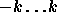
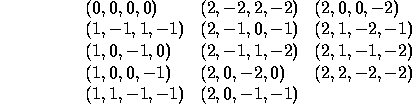

<!DOCTYPE HTML PUBLIC "-//IETF//DTD HTML 2.0//EN">
<!--Converted with LaTeX2HTML 96.1 (Feb 5, 1996) by Nikos Drakos (nikos@cbl.leeds.ac.uk), CBLU, University of Leeds ->

<HTML>
<HEAD>
<TITLE>Counting Patterns</TITLE>
<META NAME="description" CONTENT="Counting Patterns">
<META NAME="keywords" CONTENT="htmlatex">
<META NAME="resource-type" CONTENT="document">
<META NAME="distribution" CONTENT="global">
<LINK REL=STYLESHEET HREF="htmlatex.css">
</HEAD>

<BODY LANG="EN" BGCOLOR=#FFFFFF>
<H1><BR CLEAR=ALL><CENTER><TABLE BGCOLOR=#0060F0><TR><TD><B><FONT SIZE=5 COLOR=#C0FFFF>&nbsp;<A NAME="SECTION0001000000000000000000">Counting Patterns</A></FONT>&nbsp;</B></TABLE></CENTER></H1>

<P>
Let <I>n</I> and <I>k</I> be numbers with <I>n</I> &gt; 0 and  .
 A <I>configuration</I> of the <I>n</I>-<I>k</I>-puzzle is an <I>n</I>-tuple with elements in the range 
 such that their sum is zero. Configurations are considered equivalent when they can be obtained from each other by (a) cyclic permutation of the tuple over one or more positions, (b) reversal of the tuple, (c) sign reversal of all elements, or (d) combinations of (a), (b), and (c). Equivalence classes are called <I>patterns</I>.

<P>
<P>

For instance, (0, 1, 1, -2) is a configuration of the 4-2-puzzle. Some equivalent configurations are: (a) (1, -2, 0, 1), (b) (-2, 1, 1, 0), (c) (0, -1, -1, 2), and (d) (-1, -1, 0, 2). Below is given a list of (the lexicographically largest) representatives of the 14 patterns of the 4-2-puzzle.

<P>
<P>


<P>
<P>

Your program computes the number of patterns for a sequence of <I>n</I>-<I>k</I>-puzzles.
And output the list of patterns (represented by the largest one in the patterns), from lower order to higher one.

<P>
<H2><FONT COLOR=#0070E8><A NAME="SECTION0001001000000000000000">Input</A></FONT></H2>
<P>
The input consists of a sequence of pairs of integers <I>n</I> and <I>k</I>, which are separated by a single space. Each pair appears on a single line. The input is terminated by an end-of-file. The value for <I>n</I> + <I>k</I> is at most 12.
Make sure that your algorithm is fantastic enough.

<P>
<H2><FONT COLOR=#0070E8><A NAME="SECTION0001002000000000000000">Output</A></FONT></H2>
<P>
The output contains a sequence of blocks, the fisrt line contain a single integer(x), representing the number of patterns for the corresponding <I>n</I>-<I>k</I>-puzzles in the input, and follow x lines, each one contain one pattern(from lower order to higher one). Print one blank line between two consecutive blocks. No blank line should appear at the end of the output.

<P>
<H2><FONT COLOR=#0070E8><A NAME="SECTION0001003000000000000000">Sample Input</A></FONT></H2><P>
<PRE>
8 0
4 2
</PRE>

<P>
<H2>
<FONT COLOR=#0070E8><A NAME="SECTION0001004000000000000000">Sample Output</A></FONT></H2>
<P><PRE>
1
(0,0,0,0,0,0,0,0)

14
(0,0,0,0)
(1,-1,1,-1)
(1,0,-1,0)
(1,0,0,-1)
(1,1,-1,-1)
(2,-2,2,-2)
(2,-1,0,-1)
(2,-1,1,-2)
(2,0,-2,0)
(2,0,-1,-1)
(2,0,0,-2)
(2,1,-2,-1)
(2,1,-1,-2)
(2,2,-2,-2)
</PRE><P>

<P>
<H2>

</BODY>
</HTML>